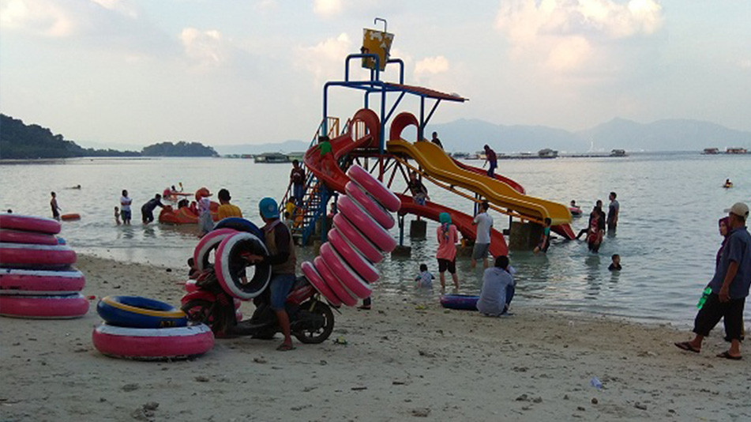
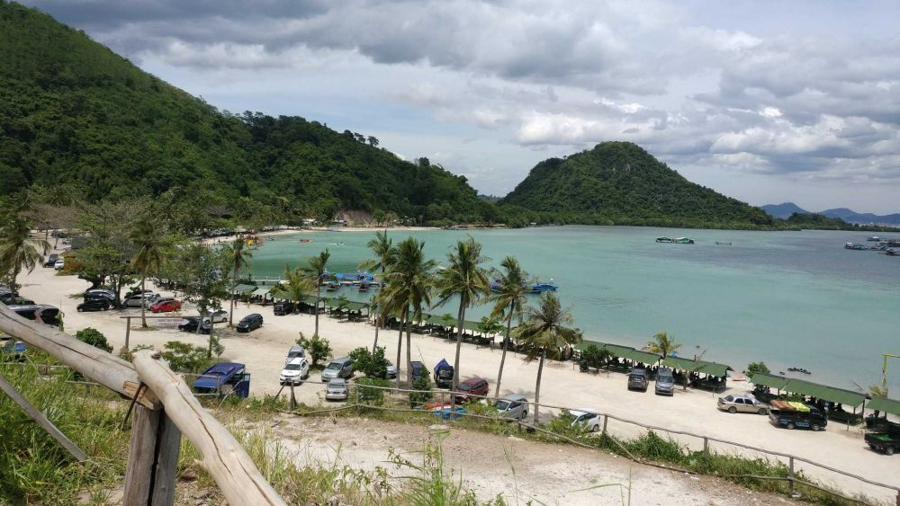
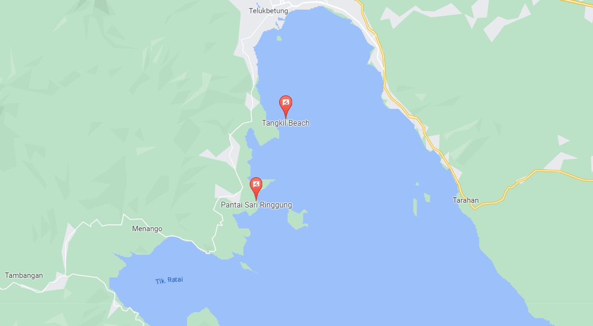

Pantai Sari Ringgung
Sari Ringgung merupakan salah satu tempat wisata pantai favorit di Lampung. Selain lautnya yang masih
bersih, lokasinya pun tidak terlalu jauh dari Kota Bandar Lampung. Jarak dari Kota Bandar Lampung ke
Pantai Sari Ringgung sekitar 14 km, atau bisa ditempuh dengan kendaraan sekitar 30 menit. Pantai ini
sempat ditutup saat pandemi, dengan berbagai alasan. Dan kini sudah buka lagi, bisa dikunjungi oleh
wisatawan. Pengunjung yang liburan ke pantai ini banyak juga berasal dari jauh seperti Jakarta,
Bandung, Palembang, serta di dalam Provinsi Lampung ada rombongan anak sekolah dari Tulang Bawang,
Mesuji, Way Kanan, dan sekitarnya.
Wahana Wisata Pantai Sari Ringgung
Wahana Wisata Pantai Sari Ringgung
Pantai di Pesawaran ini memiliki beberapa fasilitas dan wahana sebagai berikut:
Waterboom kecil, ayunan, perosotan
Anda dapat memilih untuk mandi di pantai sebelah utara, dekat pintu masuk, atau di sebelah
selatan. Di kedua lokasi tersebut sama-sama terdapat semacam waterboom kecil, untuk perosotan
bagi
anak-anak. Orang dewasa pun bisa juga ikut perosotan di waterboom tersebut. Waterboom di sebelah
utara lebih tinggi dibandingkan dengan yang ada di sebelah selatan. Jika anda membawa anak kecil
umur 3 atau 4 tahun, mungkin lebih pas jika mandi di pantai sebelah selatan. Selain waterboomnya
lebih pendek, ada juga perosotan dan ayunan di pinggir pantai.

Hanya saja, di sebelah selatan ini, pinggiran pantainya lebih banyak batu-batu dibandingkan
dengan pasirnya. Bagi anda yang membawa anak, harap selalu mengawasi anak-anak anda ketika
bermain air. Jangan sampai anak mandi sendiri tanpa diawasi. Sebenarnya di waterboom tersebut
terdapat tong air tumpah. Sayangnya, pada saat saya berkunjung ke sana, tong air tumpah tersebut
sudah tidak berfungsi lagi. Entah alasan biaya operasional atau alasan lainnya saya kurang tahu.
Jika tong air tumpah tersebut dioperasikan lagi pastinya bakal lebih seru mandi di laut sambil
diguyur air dan perosotan di waterboom.
Pondokan atau Gazebo

Banyak sekali tersedia pondokan di pinggir pantai untuk berteduh dari sinar matahari. Tarif
sewanya sebesar Rp50.000 tanpa batas waktu. Jika anda pergi beramai-ramai bersama keluarga ada
baiknya juga untuk menyewa pondokan untuk meletakkan barang-barang anda.
Tempat Olah Raga
Pantai Sari Ringgung juga menyediakan tempat olah raga bagi anda. Bagi yang suka futsal, tersedia
lahan khusus untuk futsal pantai. Bagi yang suka voli, disediakan juga lokasi untuk voli pantai.
Bagi anda yang hobi camping, juga dapat berkemah di Pantai Sari Ringgung. Pada saat saya
berkunjung ke Pantai Sari Ringgung, ramai juga rombongan yang bermain futsal dan voli di pantai.
Masjid Apung
Di tengah-tengah laut, anda akan melihat sebuah masjid yang terapung di tengah-tengah laut.
Masjid ini terlihat unik karena mengapung di tengah laut. Itulah mengapa disebut masjid apung.
Jika anda ingin merasakan sholat di masjid ini silakan datang ke masjid dengan menggunakan
perahu.
Lokasi Pantai Sari Ringgung

Sari Ringgung terletak di Desa Sidodadi, Kecamatan Teluk Pandan, Kabupaten
Pesawaran, Provinsi
Lampung.
Secara administrasi, pantai ini masuk ke wilayah Kab. Pesawaran, bukan Kota Bandar Lampung.
Rute
Dari Bandar Lampung, sebelum mencapai Pantai Sari Ringgung, anda akan melewati Pantai Duta
Wisata, lalu Pantai Tirtayasa, Puri Gading, dan
Pantai
Mutun.
Setelah lewat Pantai Mutun, anda akan melewati pasar Hanura. Tidak jauh dari pasar Hanura, jalan
lagi terus, anda akan melihat papan nama/spanduk besar di kiri
jalan yang menunjukkan jalan masuk ke Pantai Sari Ringgung. Silakan belok kiri, mengikuti jalan
masuk Pantai Sari Ringgung.
Jalan masuk ke pantai masih belum di aspal. Ikuti saja jalan tersebut, kurang lebih 1 km anda akan
sampai di Pantai dengan pasir putih tersebut. Pantai Sari Ringgung ini terletak di tengah-tengah
antara Pantai Mutun dan Pantai Klara. Lokasinya
sangat mudah ditemukan.
Gallery